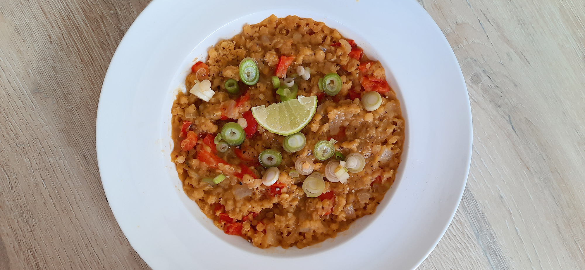

indiase dahl linzencurry
Lekker met naanbrood of rijst

Bereidingsduur: 30 minuten
Aantal personen: 3
Ingrediënten:
200 gram rode linzen
1 ui
1 paprika
3 lente uitjes
2 teentjes knoflook
1 limoen
750 milliliter bouillon
0,25 theelepel kardemom
0,5 theelepel korianderpoeder
0,5 theelepel komijn
1 theelepel kerrie
1 theelepel mosterd
naar smaak peper
0,5 theelepel kaneel
2 eetlepels gemberpoeder
2 stuks naanbrood
optioneel rijst
200 gram rode linzen
1 ui
1 paprika
3 lente uitjes
2 teentjes knoflook
1 limoen
750 milliliter bouillon
0,25 theelepel kardemom
0,5 theelepel korianderpoeder
0,5 theelepel komijn
1 theelepel kerrie
1 theelepel mosterd
naar smaak peper
0,5 theelepel kaneel
2 eetlepels gemberpoeder
2 stuks naanbrood
optioneel rijst
Instructies:
1. Snijd de ui, knoflook en paprika klein. Neem een grote pan en fruit de ui en knoflook. Voeg de paprika toe en bak kort.
2. Voeg daarna kort de kruiden toe en meng goed. Voeg dan de linzen en bouillon toe en laat dit ongeveer 15 minuten koken. Roer tussendoor goed.
3. Maak ondertussen het naanbrood of de rijst klaar en snijd de lente uitjes in ringetjes. De dahl is klaar wanneer deze papachtig is. Breng de curry op smaak met wat peper naar smaak en limoen. Garneer met de lente uitjes. Serveer met de rijst of het naanbrood.
1. Snijd de ui, knoflook en paprika klein. Neem een grote pan en fruit de ui en knoflook. Voeg de paprika toe en bak kort.
2. Voeg daarna kort de kruiden toe en meng goed. Voeg dan de linzen en bouillon toe en laat dit ongeveer 15 minuten koken. Roer tussendoor goed.
3. Maak ondertussen het naanbrood of de rijst klaar en snijd de lente uitjes in ringetjes. De dahl is klaar wanneer deze papachtig is. Breng de curry op smaak met wat peper naar smaak en limoen. Garneer met de lente uitjes. Serveer met de rijst of het naanbrood.